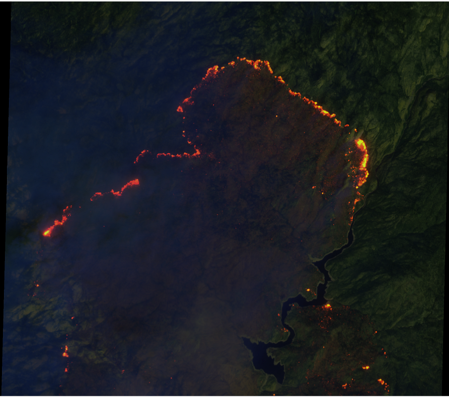
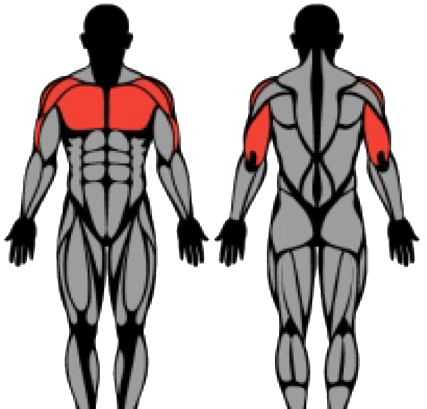
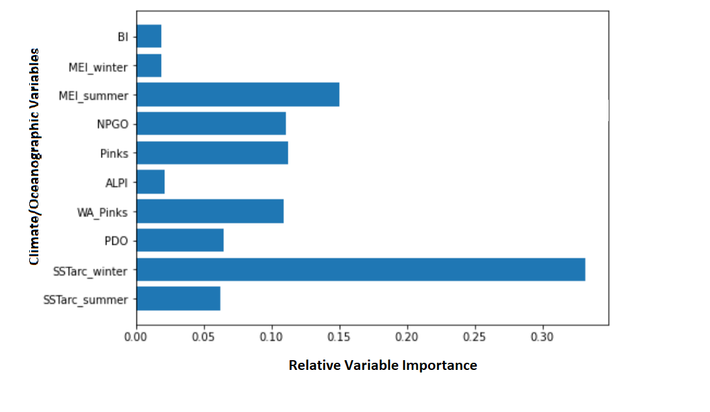
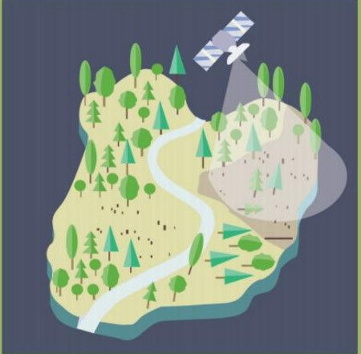

I am a current undergraduate student studying Applied Mathematics and Computer Science at University of California, Berkeley. I am passionate about data science with a focus on deep learning and computer vision with convolutional neural networks, and I enjoy learning applied topics in linear algebra, differential equations, and vector calculus. I aim to pursue a career that involves designing novel machine and deep learning methodologies to solve real-world challenges.
University of California, Berkeley: 2022 - 2026: Transcript
|
Topic Modeling of Mental Health Forum Posts for Thematic Analysis
National University of Singapore (NUS), Institute of Mathematical Sciences (IMS) May 2024 - July 2024 |
I worked with Singapore's Ministry of Health, Office of Healthcare Transformation (MOHT) to research posts in MOHT's mental health forum, specifically to discover themes and topics discussed by users. Topic modeling algorithms researched include Latent Dirichlet Allocation (LDA), Nonnegative Matrix Factorization (NMF), Top2Vec, and BERTopic. A novel clustering method was proposed to account for the stochastic nature of BERTopic, the best performing algorithm on our dataset. A comparative analysis between mental health posts on MOHT's forum, Reddit, and HardwareZone (Singaporean forum) was performed to discover insights into similarities and differences based on type of forum and demographics. | |
|
Wildfire Burned Area Segmentation with Satellite Imagery (Research)
UC Davis, Professor Ali Moghimi June 2023 - August 2023
|
I worked on implementing specialized convolutional U-Nets for segmenting burned areas in multispectral Sentinel-2 Level 2A satellite images of California 2020 wildfires. The end goal is to combine methods for active fire detection, burned area segmentation, and smoke detection to devise a single deep learning model for simulateous prediction of in all three aspects. Current progress includes a well-performing baseline U-Net for burned area segmentation using red, green, and blue band images after data augmentation. |  |
|
Exercise Recommender Web Application
February - May 2023 Github Repository |
This group project used tools such as node.js, express.js, MongoDB, and front-end web development tools to create an app that generates exercise recommendations and allows users to store and personalize exercises to their own interests. We use an API to retrieve exercise descriptions classified into different muscle groups, whereby users can select a muscle group to receive a random associated exercise. We also use an API to generate and display famous motivational quotes on the home page. |  |
|
Columbia River Chinook Salmon Growth Research with Random Forest Models
UC Davis, Baskett Lab January - July 2021 |
I worked with a PhD student working within the Baskett Lab on machine learning and statistical algorithms for predicting growth of salmon across populations and time in the Columbia River. I used both generalized additive models (GAMs) and Random Forest models to make predictions using Python tools. Random Forest was also used to assess variable importance, where the variables included climate and oceanographic predictors that influence the growth of salmon. |  |
|
Machine Learning in Environmental Science Article Publication
Journal of Youths in Science February 2021 Link to Journal Issue 12.2 |
I extensively researched and discussed (~ 1900 words) the mechanics convolutional neural networks and a number of applications of computer vision algorithms in tackling climate change, mainly deforestation detection and precision agriculture. The research article is titled "Machine Learning for a Greener Planet." |  |